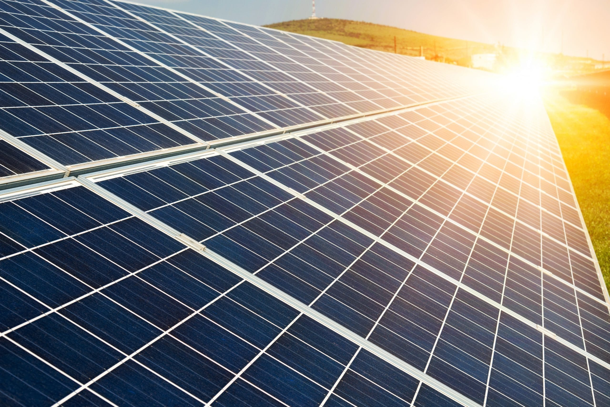
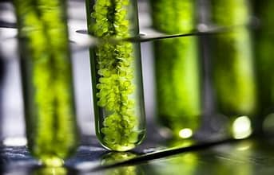
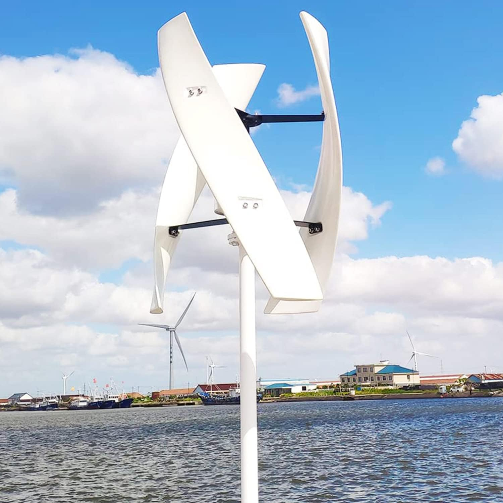

Familiaritza’t amb les alternatives a les energies no renovables

LA ENERGIA SOLAR
Una de les més reconegudes, l'energia solar només necessita panells solars per començar a proporcionar electricitat. De mitjana, un panell solar produeix 400 watts per si sol.

LOS BIOCOMBUSTIBLES
Encara que no soni molt diferent als combustibles no renovables com el petroli, els biocombustibles son derivats de substancies organiques i alimenten plantes termiques i motors de combustio normals.

LA ENERGIA EOLICA
Una altra de les mes reconegudes, l'energia eolica transforma el vent en electricitat per a la teva casa.